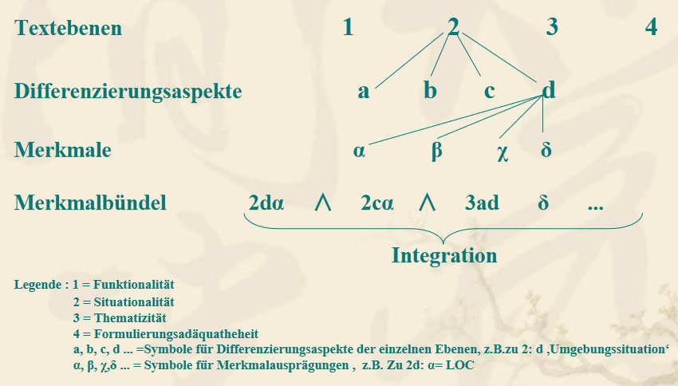

6 Kriterien für Textklassen
Es gibt zahlreiche Möglichkeiten von Klassenbildungen und Ordnungen. Für die Sortierung von Texten und Textsorten gibt es kein verbindliches, allgemeines und in sich geschlossenes System … Letztlich ist das Ziel jeder Textsortendarstellung nicht irgendeine Typisierung, sondern die Beschreibung spezieller Routinen. (Adamzik 1995b, 28)
6.1 Freiburger Redekonstellationen
Im Rahmen der Freiburger Schule wurden aufgenommene Gesprächstexte transkribiert und gemäß einem linearen Klassifizierungsschema in Gesprächssorten eingeordnet. Hier ist ein Beispiel für eine dieser Redekonstellationen (Heutiges Deutsch II/3 (1975), Institutu für deutsche Sprache (IDS) in Freiburg im Breisgau):
- Gespräch über Familien und Erziehungsprobleme (XEG)
- S p r e c h e r b e s c h r e i b u n g
AA: weiblich; 35 Jahre; verheiratet; Weiler (Kr. Villingen), Königsfeld, London, Freiburg, Heidelberg, Berlin, Wien, Zürich, Gaienhofen (Radolfzell), Karlsruhe, Wiesloch, Freiburg; Pfarrerin.
AB: männlich; 33 Jahre; verheiratet; Freiburg, Göttingen, Heidelberg, Tübingen, Zürich, Freiburg; Pfarrer.
- R K B e s c h r e i b u n g
- Verhältnis der Teilnehmer: AA und AB sind miteinander verheiratet
situativer Rang während des Gesprächs: gleichberechtigt Häufigkeit der Interaktion der Teilnehmer: oft
Vorwissen: hoch
- Kommunikationsmedium: facetoface
- Kommunikationsort: Wohnung von AA und AB
- Zeitpunkt: nicht verabredet
- Themenbehandlung: vorwiegend argumentativ
- Situationsverschränkung: kaum vorhanden
- Sprecher und Thema: Interesse: ja
Vorbereitung: keine spezielle Vor bereitung
Vorwissen: ja
- Themafixierung: nein
- Öffentlichkeitsgrad: privat
- Situationsvertrautheit: groß
- Situationsdistanz: bei AB größer als bei AA
- T h e m e n i m G e s p r ä c h s v e r l a u f
Über ein Theaterstück. Angst des Kindes. Märchenerzählen oder nicht Märchenerzählen? Beispiel für den hohen Rea litätsgehalt der Märchen für ein Kind. Problem der Ver mittlung zwischen Märchenwelt und Realität. “Magische Phase” des Kindes. Ausräumung der Angst durch Bestärken der Persönlichkeit oder durch Aufheben der Angstmotive. Unsicherheit als Ursache von Angst. Eingeschlossensein als Ursache von Angst. Wer ist für den Entschluß, das Kind einzuschließen, verantwortlich? Notwendigkeit eines eindeutigen Erziehungsprinzips. AA’s Angst vor den Un willensäußerungen von AB. AA’s Abwehrmechanismen. Modus zukünftiger Diskussionen zwischen AA und AB. Verstehen des gesehenen Theaterstückes. Personen im Theaterstück. Zeitplanung für den nächsten Vormittag. Servierfähig keiten der Hausangestellten als grundsätzliche Voraus setzung für ihre Einstellung. Hausangestellte als Unter stützung von AA.
- Dauer der Aufnahme des Ausschnitts: 32 min sec
Dauer der Textbuchwiedergabe: 32 min sec
Anzahl der Wörter: 3498
- Aufnahme: Originalaufnahme IdSFreiburg, 1971, in Freiburg
6.2 Spezifizierung textueller Merkmale
Mehrdimensionalität von Texten als Ausgangspunkt für Klassifizierungen
Subdifferenzierung einer jeden Dimension
- Funktionalität: Hauptfunktionen →
- Sich Ausdrücken
- Kontaktieren
- Informieren
- Steuern
- Ästhetisch Wirken
- Situationalität: Situationsklassen →
- Tätigkeitssituation
- Kanal/Medium
- Anzahl der Partner
- Umgebungssituation …
- Thematizität & Strukturiertheit →
- Thematische Geprägtheit
- Text-Thema-Entfaltungen
- Textstrukturierung
- Formulierungsadäquatheit →
- Kommunikationsmaximen
- Textsortenspezifische Formulierungsmuster
- Stilistische Besonderheiten
Merkmalidentifizierung
Beispiel:
Funktionsklasse
1d: Steuern
Das „Steuern“ des Partners kann umschrieben werden durch die Aufforderungen
α) P (=Partner) soll H tun = Aufforderung zum praktischen Handeln
P soll H´ vorbereiten
β) P soll X sagen = Aufforderung zu einer Sprachehandlung
Situationsklasse
2d: Anzahl der Partner
α) dyadische Kommunikation = nur ein Partner
β) Gruppenkommunikation = Kleingruppe als Partner …
Formulierungsklasse 4b: Textsortenspezifische Formulierungsmuster
α) syntaktische Spezifika
dominierender Satztyp
Komplexitätsgrad
Verhältnis Hauptsätze: Nebensätze
β) lexikalische Spezifika
Indikatoren der Textfunktion
Mehrfachkomposita
Dominanz bestimmter Derivationen
Kollokationen

6.3 Differenzierung verschiedener Textsorten und Texttypen
Zwei Gesichtspunkte (Linke/Nussbaumer/Portmann 1994: 251):

textINtern
an die Text-Oberfläche gebunden - an die Text-Tiefenstruktur gebunden,
z.B. z.B.
• Wortschatz • Thema/Themenverlauf
• Satzbaumuster • Textstrukturmuster
textEXtern an den Kommunikationszusammenhang gebunden, z.B. •Textfunktion •Trägermedium
6.4 Textsortenkriterien
Kriterien bei der Beschreibung/Analyse von Textsorten nach den bei W. Heinemann 2001 genannten begriffsetablierenden Kategorien:
- die kommunikative Funktion:
- Mit welcher Absicht oder Intention / zu welchem Zweck / mit welchem kommunikativen Ziel wird ein Text dieser Sorte verfasst? Wozu dient er? Was soll erreicht werden?
- situative Bedingungen
- Sprecher/Schreiber:
Wer schreibt solche Texte üblicherweise?
(Autor(en): individuell/institutionell? beruflich/privat?)
- Hörer/Leser:
An wen sind sie üblicherweise gerichtet?
Für wen sind sie bestimmt? (Rezipienten: Alter, Bildung, Zahl, …)
- Kommunikationsbereich und Kanal:
schriftlich/mündlich/elektronisch?
öffentlich/nicht-öffentlich?
vertraut/offiziell? …
- Art der Relation zwischen Autor(en) und Rezipienten:
symmetrisch/hierarchisch?
Generationszugehörigkeit/Altersunterschied? …
- [kommunikative] Vorgeschichte des Textes / Kontext / Gesprächszug (z.B. Mahnung, Protestschreiben, Entschuldigung)
- inhaltlich-thematische Aspekte
- Welche Themen/Inhalte treten in solchen Textsorten üblicherweise auf? Welche Themen sind möglicherweise tabuisiert?
- Gibt es obligatorische, typische und variierende Inhaltselemente?
- Gibt es eine typische Reihenfolge, in der die Inhaltselemente erscheinen?
- Welche Prozeduren der inhaltlichen Verarbeitung gibt es?
- charakteristische Strukturen und Formulierungen
- Auf welche Weise werden die einzelnen Inhaltselemente in der betreffenden Textsorte typischerweise realisiert?
Wortschatz, kommunikative Formeln, Metaphorik, grammatische Konstruktionen, typische Syntax, stilistische Eigenheiten? (z. B. Lexik einschl. Abkürzungen in Wohnungsanzeigen)
- die äußere Textgestalt / das Layout
- Gibt es typische Gestaltungsmerkmale für diese Textsorte oder für Textsortenvarianten? (z. B. “weißer Raum” in Stellenanzeigen für Berufe mit hohem vs. geringem Qualifikationsniveau)
- Dienen äußere (z. B. typographische oder orthographische) Merkmale der Abgrenzung von anderen Textsorten? (z. B. Smileys in der Chatkommunikation und in der E-Mail)
- Farbsemiotik: vgl. Websites konventioneller Zeitungen im Gegensatz zu den Online-Versionen der sog. Boulevardblätter
- Welche Rolle spielen nonverbale Elemente wie Bilder, Fotos, Diagramme u. Ä.?
Textsortenbeschreibungen sollten alle relevanten Eigenschaften der genannten Merkmale enthalten.
6.5 Illokution als Basiskriterium
Rolf (1993) strebte eine Sortierung von Texten an, die konsequent nach einem Kriterien (die dominierende Illokution als Basiskriterium) vorgenommen wurde.
Die Verwendung eines einzigen Kriteriums zur Unterscheidung von Texten führt zu fragwürdigen Einordnungen. Um derartige Ungereimtheiten in der Klassifizierung zu vermeiden, ist es ratsam, die Mehrdimensionalität von Texten und ihre Dynamik zu akzeptieren. Die einzelnen Ebenen sind demnach hierarchisch zu ordnen und die Kriterien (etwa das Basiskriterium) an den jeweiligen Verwendungszweck dynamisch anzupassen.
6.6 Textfunktion als Basiskriterium
Basiskriterium (?) zur Unterscheidung von Textsorten: Textfunktion
Was ist eine Textfunktion?
Große(1976): dominante Textfunktion durch sprachliche Ausdrücke vermittelte, an den Rezipienten gerichtete Instruktion, wie der Text zu verstehen ist( 15ff, 26,68)
Baugrande/Dressler(1981): unterscheiden nach der dominanten Textfunktion: deskriptive, narrative, argumentative Texte
Brinker(1985): Textfunktion als Kommunikationsabsicht des Textverfassers, die im Text mit konventionell geltenden Mitteln realisiert ist.
Textfunktion (z.B. Brinker 1992):
• wie ist ein Text zu verstehen?
• welche Absicht verfolgt der Autor?
Informationstexte (Nachricht, Bericht, Sachbuch, Rezension [. . .] )
Appelltexte (Werbeanzeige, Kommentar, Gesetz, Antrag [. . .] )
Obligationstexte (Vertrag, Garantieschein, Gelöbnis [. . .] )
Kontakttexte (Danksagung, Kondolenzschreiben, Ansichtskarte [. . .] )
Deklarationstexte (Testament, Ernennungsurkunde [. . .] )” ).
kontextuelle Kriterien/situative Faktoren nach Brinker:
• direkte Gespräche
• Telefongespräche
• Rundfunksendungen
• Fernsehsendungen
• Briefe
• Zeitungsartikel/Bücher
Kriterien des Handlungsbereichs:
• privat
• offiziell
• öffentlich
Strukturelle Kriterien nach Brinker:
Art des Textthemas:
“temporale Orientierung”: zeitliche Fixierung des Themas relativ zum Sprechzeitpunkt (z. B. in Nachricht, Protokoll, Horoskop) (130)
“lokale Orientierung”: “Relation zwischen Emittent bzw. Rezipient und Thema” (z. B. in Zeitungsannoncen und -kommentaren).
6.7 Vertextungsmuster
Formen der thematischen Entfaltung
Deskriptive Texte: füllen Wissenslücken
Narrative Texte: zeitliche Anordnung von Ereignisse und Handlungen
Argumentative Texte: vorliegen von Relationen wie Begründung, Signifikanz, Gegensatz etc.
Texttypen: Unterscheidung nach ihrer dominanten Funktion im sprachlichen Handeln